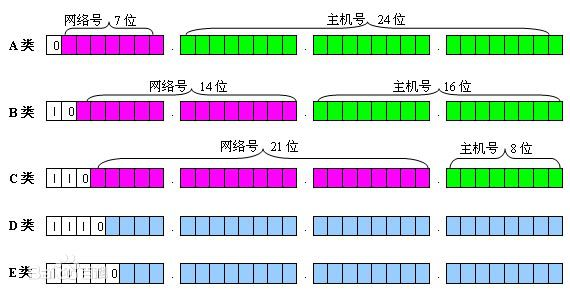
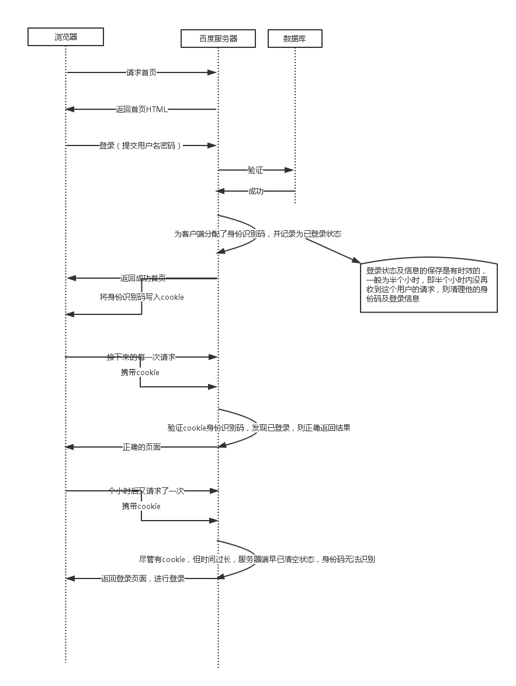

通信协议是什么？
交流的规则
举例：
汉语、英语、法语、德语
IP协议 Internet Protocol
4个字节, 一共32位
子网掩码 的作用？ 255.255.255.0
确认两台计算机是否处于同一网段

TCP、UDP的区别
如果TCP比作是打电话，那么UDP就是在发短信
TCP面向连接的协议（通信之前必须先建立连接）
于是，TCP相对可靠，它建立连接的过程称为3次握手
第一个特点：
三次握手，建立连接

第二个特点：
所有的消息，需要对方确认送达。
"土豆，土豆，我是茄子，收到请回答"
"茄子，茄子，我是土豆，收到消息"
当消息发送失败，则对当前消息开始进行重复发送，直至收到回应为止。
"茄子，茄子，我是土豆，我被人油炸了，我改名叫薯片，收到请回答"
............
"茄子，茄子，我是土豆，我被人油炸了，我改名叫薯片，收到请回答，第2遍"
............
"茄子，茄子，我是土豆，我被人油炸了，我改名叫薯片，收到请回答，第3遍"
............
"薯片，薯片，我收到消息"
因此可以确保数据的准确送达
举例：
局域网游戏，往往都有这样的特点，当多人联机对战时，若有一个人掉线
其他所有玩家进入读秒状态，那么说明玩家和玩家之间采用了TCP协议。
因为对于游戏来讲，它不允许丢失任何数据，不然有可能出现两边不一致的情况：
我这边画面一刀把你砍死了，你那边画面却吃了个大血瓶抗住了。。。。。
UDP面向数据报的协议 (不可靠的协议)
无需建立连接
发送消息也无需对方确认
无法保证数据的发送顺序，以及准确率
数据的发送顺序是 a.........b.........c...........d
由于网路延迟的原因，对方收到数据的顺序有可能是b...........d..........a
UDP通常用于视频、语音等通信（丢掉了一帧画面是无所谓的）
HTTP（无状态的协议）
基于TCP协议的一种高级协议, 用于客户端和服务器直接的通信
Socket
(socket是一种网路通信模型，由伯克利大学发明，由于其优秀的设计后被各大编程语言所采用)
//以下是JAVA使用socket链接百度服务器，请求首页的代码
import java.io.BufferedReader;
import java.io.BufferedWriter;
import java.io.InputStreamReader;
import java.io.OutputStreamWriter;
import java.net.Socket;
public class ClientSocket {
public static void main(String[] args) throws Exception {
Socket skt = new Socket("61.135.169.125",80);
BufferedWriter bw = new BufferedWriter( new OutputStreamWriter( skt.getOutputStream() ) );
bw.write("GET / HTTP/1.1");
bw.newLine();
bw.write("Host: www.baidu.com:80");
bw.newLine();
bw.write("Content-Type: text/html");
bw.newLine();
bw.newLine();
bw.flush();
//GET / HTTP/1.1
//Host: localhost:8080
//Content-Type: text/html
BufferedReader br = new BufferedReader(new InputStreamReader(skt.getInputStream()));
String str = null;
while( (str = br.readLine()) != null) {
System.out.println(str);
}
}
}
反复观察上面这个SOCKET程序的运行结果，你能看的出来么？这种通信最大的问题在哪？
问题就在于每次收到返回的页面，连接都断开了。
因此HTTP这种无状态的协议，最大的特点就是，你挂断了电话老子还怎么通讯？！
刚刚提交过的用户名密码(登录动作)，
下次请求服务器(例如查询账户余额)，难道还要重新验证身份？
于是cookie就出现了
COOKIE的诞生，为什么叫会话跟踪技术？
在一次会话从开始到结束的整个过程，全程跟踪记录客户端的状态（例如：是否登录、购物车信息、是否已下载、是否已点赞、视频播放进度等等）
你把COOKIE就当成是第一次跟服务器连接后，服务器发给你的身份牌，上面就记录跟你有关的信息
以后只要再跟服务器通信，必须带着这个身份牌
这样一来，关于你是谁？ 有没有登陆过？ 购物车里有什么信息？ 服务器当然就很容易知道了。
这里面当然还有很多的安全隐患，也有相应的解决办法，这个不在我们今天的讨论范围。
cookie有哪些特点？
1 只能使用文本文件
(如果浏览器可以随意在客户端机器上生成文件，比如身份牌是个定时炸弹，安全问题将会变得非常严重)
2 文件有大小限制 4KB
(文件若没有大小限制，比如身份牌的重量是140斤，挂脖子能不能累死？)
3 数量限制
（一般浏览器，限制大概在50条左右，你家的门禁卡里能存的下一部蓝光高清么？）
4 读取有域名限制(同源策略)
不可跨域读取，只能由来自 写入cookie的 同一域名 的网页可进行读取。
简单的讲就是，谁写的cookie，谁才有权利读取
（身份牌是我发你的，当然只有我能读取，你媳妇儿的手机自动连接了邻居老王家的wifi，你知道这意味着什么吗？)
5 时效限制
每个cookie都有时效，最短的有效期是，会话级别：就是当浏览器关闭，那么cookie立即销毁
（安全学基本理论：密码锁每次打开都需要重新输入密码，输入一次密码，以后就不再验证，就没有安全可言
问： 信用卡为什么会有过期时间？
）
Cookie的流程图

如果有时候，我们需要这个网页长时间跟服务器保持连接，比如说即时通讯、语音、视频等等
HTML5的websocket，试图解决这个问题
在websocket没有诞生以来，解决这个问题是极为困难的。
通常有两种做法：ajax轮询和 comet技术
第一种：ajax轮询
就是隔一段时间发一次请求，不停的向服务器询问，有没有新消息
参考咱们的课堂案例，groupchat.html

就是要不停的问！（你有没有考虑过服务器的感受？）
第二种 ： comet技术
这个是利用了HTTP协议的1.1版本中新推出的长连接
咦？这名字听上去好像不错，如果连接可以长时间保持不断开，那问题不就解决了吗？
其实长连接仅仅只是延长了连接时间，可以在一次连接中出现很多个request和response
但是在即时通讯这样的功能里面，由于客户端不知道消息何时发过来？
我们需要服务器主动的向客户端推送消息。但长连接并不能做到这一点。
因为在HTPP协议的特点中，服务器的response必须是在收到了客户的request后才能产生的
说白了，你请求一次，服务器返回一次，你不请求，服务器不能主动返回
于是，高手们想到了这样一个办法

"有新消息吗？ 不！我不听！不要告诉我没有！等有新消息了你再回答我！" //第一次requrest，长连接已经开始
............过了一会
"有新消息了" //服务器返回，第一次response
"哈哈哈，好兴奋"//客户端接收结果并处理，此时连接没有断开
"还有新消息吗？等有新消息了再回答我吧！" //第二次requrest
............过了一会
"有新消息了" //服务器再次返回，第二次response
这样做看起来，好像是服务器主动发送了消息，其实每次我们都要先发请求，只不过没有消息的时候这个请求被阻塞了而已
不好的地方在于，它消耗了大量程序资源，程序除了处理业务逻辑，还要负责管理这个请求
WebSokcet是一种HTTP1.1协议的增强版，就像socket程序一样，消息可以随时发送，随时接受
我们的服务器从被动的返回，变成了主动的发送
"有新消息吗？有了通知我" //第1次requrest，连接上了
............过了一会
"有新消息了" //第1次response，连接保持中...
............过了一会
"又有新消息了" //第2次response，连接保持中...
............又过了一会
"又有新消息了" //第3次response，连接保持中...
它还有一个巨大的好处就是，这个连接的保持可以不再由程序处理
想象这样一个场景：
Twitter上有成千上万的用户，每秒钟有几十万人同时跟服务器做连接，做信息交换。程序能处理的了这么多的连接么？
于是我们考虑这样一种模型：